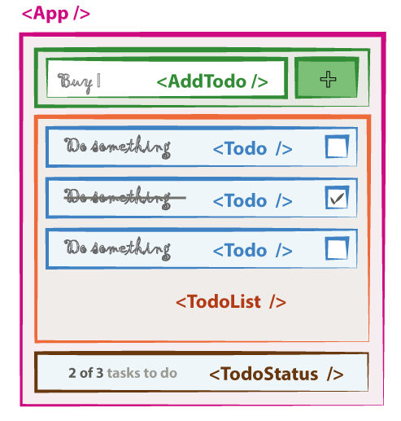
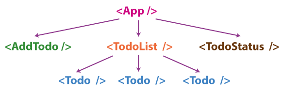

<div class="container small">
  <h1 class="text-center">Structure de l'application</h2>
    <div class="row">
      <div class="col-md-6">
        
      </div>
      <div class="col-md-6">
        
      <p>Les données sont propagées dans l'application de haut en bas à l'aide
        des <mark>props</mark>. (un composant peut alimenter ses fils). <br>
        Mais que se passera-t-il quand le composant <code>&lt;AddTodo /&gt;</code> 
        ajoutera un <code>&lt;Todo /&gt;</code>?
      </p>
      <p>Dans notre cas la liste des <mark>Todo</mark>s doit être dans l'état (State) du 
        composant <code>&lt;App /&gt;</code>. <br>
      Dans ce cas comment le composant <code>&lt;AddTodo /&gt;</code> fera-t-il pour
      modifier l'état du composant parent?
      </p>
      <p class="text-muted">C'est ce que nous allons voir dans les slides suivants.</p>
      </div>
    </div>
  
</div>
